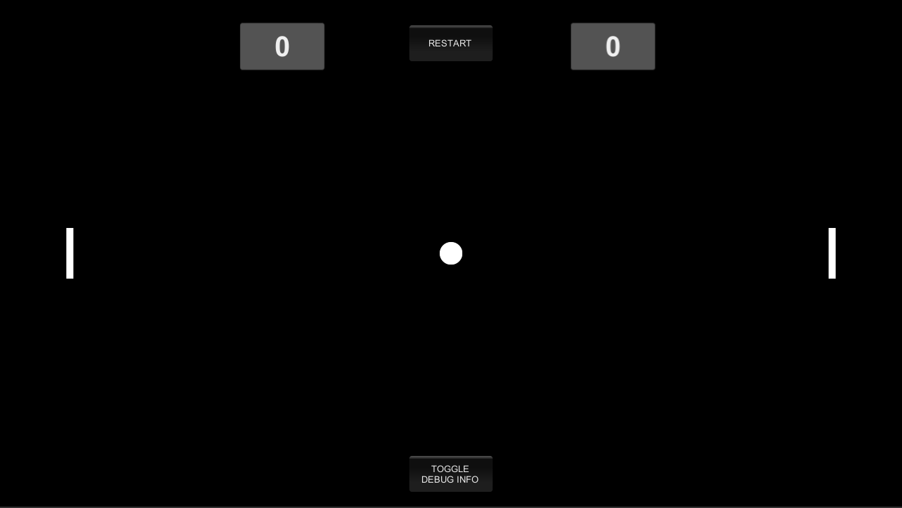

More stuff I've done in programming be found at my github repository: Github
For the past years, I've been developing games for personal (hobby) and collaborative projects.
These are some prototypes/games that I have created:
Unlimited Shortest Path Ball
Year: 2021
Tools and technologies: C#, Unity
Unlimited Shortest Path Ball is a modified rolling ball game with some additional simple mechanics inspired from Fall Guys and Shortest Path Algorithm.
You play as a ball and your goal is to collect as many cubes as possible while minimizing the traversal path, and to survive from the falling floor! The floor size will grow as you proceed further, no maximum level!
Achieve the highest score so you can be placed in the Top Scoreboard!
Note: I only used Fisher and Yates algorithm and simple iteration to generate the levels dynamically.
The Adventure of The Flowing Frog (FLOG)
Year: 2021
Tools and technologies: C#, Unity
FLOG is a game where you play as a frog, surviving through out the water streams as you encountering a lot of insecure squirrels.
Time to cast your magic bullets to drop them those squirrels from trees, so you can safely cross the water stream to reach your final destination.
Kendarace
Year: 2019
Tools and technologies: C#, Unity
Kendarace is a 2D platformer game which includes cars and traffic sign as components.
In order to win, player needs to drive their car onto the finish line as fast as possible, but with safety... by obeying rules and traffic sign during the time they drive their cars.
Nin Nin Zombies
Year: 2017
Tools and technologies: C++, SFML (library)
Nin Nin Zombies is a classic minigame which is using the 2D Platformer game concept. Player have to survive from the zombie outbreak by using kunai to eliminate these mad zombies before reaching them. Don't EVER touch the zombies, if you don't want to be suffered from those infections.
Blacky Bird
Year: 2020
Tools and technologies: gDevelop
Blacky Bird is just another type of Flappy Bird which was booming a few years ago. The gameplay of this game is that the player has to pick as many coins as possible without falling or crashing onto the cactus.
This game is only made using simple visual scripting as part of game development seminar in my campus.
SIGN EDU
Year: 2017
Tools and technologies: C#, Unity, Firebase
SIGN EDU is an educational game created by Biology feat Informatics students to help highschool students learning Biology.
I and my team created this game to help student to improve their understanding in specific topics in Biology such as metabolism.
We hypotesized that it would be more ideal to present the learning environment in an interactive game system.
Pong

Year: 2020
Tools and technologies: C#, Unity
PONG? Who doesn't know Pong anyway? This legendary game was remade using modern game engine and language.
Some additional features that didn't exist in a traditional Pong are added as well.
Compete with your friends to get the highest score first!